Cargas puntuales: valor de \(P\) para equilibrio
Si se sabe que \(P_B = 70\ \text{N}\) y \(P_C = 25\ \text{N}\), determinar el valor de \(P\) necesario para el equilibrio del cable.
Datos geométricos: los apoyos \(A\) y \(D\) están separados \(14\ \text{m}\) horizontalmente (\(4+6+4\ \text{m}\)); \(A\) está \(5\ \text{m}\) por encima de la horizontal de \(B\) y \(D\) está \(3\ \text{m}\) por debajo de \(A\). La fuerza \(P\) actúa horizontalmente en \(B\).
Resultado: \(P = 20\ \text{N}\).
| Variable | Valor |
|---|---|
| Carga en \(B\) | \(P_B = 70\ \text{N}\) (vertical, ↓) |
| Carga en \(C\) | \(P_C = 25\ \text{N}\) (vertical, ↓) |
| Fuerza en \(B\) | \(P\) horizontal (incógnita) |
| Separaciones horizontales | \(AB = 4\ \text{m},\quad BC = 6\ \text{m},\quad CD = 4\ \text{m}\) |
| Posición de \(B\) | \(5\ \text{m}\) por debajo de \(A\) |
| Posición de \(C\) | \(3\ \text{m}\) por debajo de \(A\) |
| Apoyo \(D\) | al mismo nivel que \(A\) |
En un cable con cargas concentradas, el cable es recto entre puntos de carga. En cada nudo se aplica el equilibrio de fuerzas. La componente horizontal de la tensión es constante en todos los tramos donde no hay fuerza exterior horizontal; cambia en los nudos donde actúa una fuerza horizontal.
En el nudo \(B\) actúa la fuerza horizontal \(P\), por lo que la componente horizontal cambia:
¿Por qué? Para aplicar el equilibrio en cada nudo hay que conocer las pendientes de cada tramo. Las pendientes se calculan como Δy/Δx entre nudos consecutivos; para ello es necesario fijar un sistema de referencia y asignar coordenadas a todos los nudos.
Fijamos el origen en \(A\). Los apoyos \(A\) y \(D\) están al mismo nivel:
$$A(0,\,0),\quad B(4,\,-5),\quad C(10,\,-3),\quad D(14,\,0)$$Pendientes de cada tramo (positiva = sube de izquierda a derecha):
$$m_{AB} = \frac{0-(-5)}{4-0} = \frac{5}{4},\qquad m_{BC} = \frac{-3-(-5)}{10-4} = \frac{2}{6} = \frac{1}{3},\qquad m_{CD} = \frac{0-(-3)}{14-10} = \frac{3}{4}$$¿Por qué? En cables con cargas verticales, la componente horizontal de la tensión es constante dentro de cada tramo pero puede cambiar en nudos con carga horizontal. Se empieza por el nudo \(C\) porque en él la componente horizontal sí es la misma en los dos tramos adyacentes, lo que permite escribir directamente una ecuación en \(H_2\).
En \(C\) no hay fuerza horizontal → \(H_2\) es la misma en \(BC\) y \(CD\). Equilibrio vertical:
- Tramo \(BC\) tira hacia \(B\) (abajo): componente \(\uparrow = -H_2\cdot\tfrac{1}{3}\)
- Tramo \(CD\) tira hacia \(D\) (arriba): componente \(\uparrow = +H_2\cdot\tfrac{3}{4}\)
- Carga \(P_C = 25\ \text{N}\) ↓
¿Por qué? Una vez conocida \(H_2\) del paso anterior, el equilibrio vertical en \(B\) proporciona una sola incógnita: \(H_1\). Se resuelve el nudo de izquierda a derecha, aprovechando los resultados ya obtenidos.
Equilibrio vertical en \(B\):
- Tramo \(AB\) tira hacia \(A\) (arriba): componente \(\uparrow = +H_1\cdot\tfrac{5}{4}\)
- Tramo \(BC\) tira hacia \(C\) (arriba): componente \(\uparrow = +H_2\cdot\tfrac{1}{3} = 20\ \text{N}\)
- Carga \(P_B = 70\ \text{N}\) ↓
¿Por qué? La fuerza \(P\) es horizontal y rompe la igualdad entre las componentes horizontales de los tramos a izquierda y derecha de \(B\). El equilibrio horizontal en \(B\) da directamente \(P = H_2 - H_1\).
Equilibrio horizontal en \(B\) (\(P\) actúa hacia la izquierda, \(H_2\) hacia la derecha, \(H_1\) hacia la izquierda):
$$\sum F_x\big|_B = 0:\quad H_2 - H_1 - P = 0 \implies P = 60 - 40 = \boxed{20\ \text{N}}$$¿Por qué? Toda solución de un cable debe verificarse comprobando que las reacciones en los apoyos equilibran todas las cargas externas (∑Fx=0 y ∑Fy=0 del sistema completo). Esta comprobación detecta errores de signo o de pendiente antes de dar el resultado final.
Apoyo \(A\): \(R_{Ax} = H_1 = 40\ \text{N}\) (←); \(R_{Ay} = H_1\cdot m_{AB} = 40\cdot\tfrac{5}{4} = 50\ \text{N}\) (↑).
Apoyo \(D\): \(R_{Dx} = H_2 = 60\ \text{N}\) (→); \(R_{Dy} = H_2\cdot m_{CD} = 60\cdot\tfrac{3}{4} = 45\ \text{N}\) (↑).
$$\sum F_y = 50+45-70-25 = 0\ ✓\qquad \sum F_x = 60-40-20 = 0\ ✓$$Cable \(AE\) con tres cargas: posición de \(B\) y \(D\), tensión máxima
El cable \(AE\) soporta tres cargas verticales en los puntos indicados. Si el punto \(C\) está a \(5\ \text{m}\) por debajo del apoyo izquierdo, determinar:
a) La elevación de los puntos \(B\) y \(D\).
b) La pendiente máxima y la tensión máxima en el cable.
Datos: cargas \(6\ \text{kN}\) (en \(B\)), \(12\ \text{kN}\) (en \(C\)) y \(4\ \text{kN}\) (en \(D\)); separaciones horizontales \(20+10+15+15\ \text{m}\); \(E\) está \(20\ \text{m}\) por encima de \(A\).
Resultado: a. \(y_B = 5{,}55\ \text{m},\ y_D = 5{,}83\ \text{m}\); b. \(T = 24{,}761\ \text{kN},\ \theta = 43{,}37°\).
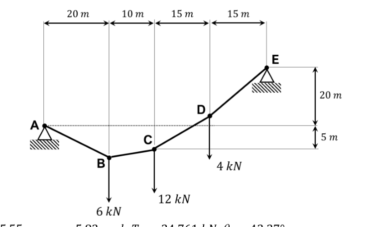
| Variable | Valor |
|---|---|
| Separaciones horizontales | \(AB=20\ \text{m},\quad BC=10\ \text{m},\quad CD=15\ \text{m},\quad DE=15\ \text{m}\) |
| Posición de \(C\) | \(5\ \text{m}\) por debajo de \(A\) (dato del enunciado) |
| Posición de \(E\) | \(20\ \text{m}\) por encima de \(A\) |
| Carga en \(B\) | \(6\ \text{kN}\) ↓ |
| Carga en \(C\) | \(12\ \text{kN}\) ↓ |
| Carga en \(D\) | \(4\ \text{kN}\) ↓ |
| Incógnitas | \(H\) (tensión horizontal), \(y_B\), \(y_D\) |
Cuando todas las cargas son verticales, la componente horizontal de la tensión es constante en todo el cable: \(H = \text{cte}\).
¿Por qué? Un sistema de referencia común es imprescindible para expresar todas las alturas como coordenadas \(y\) con signo. Se fija el origen en uno de los apoyos y se asignan las coordenadas conocidas (\(A\), \(C\), \(E\)) y las incógnitas (\(y_B\), \(y_D\)).
Origen en \(A\); \(y\) positivo hacia arriba:
$$A(0,\,0)\quad B(20,\,y_B)\quad C(30,\,-5)\quad D(45,\,y_D)\quad E(60,\,+20)$$¿Por qué? Las cargas son todas verticales, por lo que la componente horizontal \(H\) es la misma en todos los tramos. El equilibrio vertical en \(B\) genera una ecuación que liga \(y_B\) con \(H\). Se escribe en términos de pendientes: tensión vertical = H × pendiente.
$$\sum F_y^B = 0:\quad H\,\frac{0-y_B}{20} + H\,\frac{-5-y_B}{10} = 6$$ $$H\,\frac{-3y_B-10}{20} = 6 \tag{I} \quad\Rightarrow\quad y_B = -\frac{10+120/H}{3}$$¿Por qué? Análogamente, el equilibrio en \(D\) proporciona otra ecuación que liga \(y_D\) con \(H\). Como \(H\) es la misma en todos los tramos, los tres equilibrios (en \(B\), \(C\) y \(D\)) forman un sistema con tres incógnitas: \(H\), \(y_B\), \(y_D\).
$$\sum F_y^D = 0:\quad H\,\frac{-5-y_D}{15} + H\,\frac{20-y_D}{15} = 4$$ $$H\,\frac{15-2y_D}{15} = 4 \tag{III} \quad\Rightarrow\quad y_D = \frac{15-60/H}{2}$$¿Por qué? El punto \(C\) tiene coordenada \(y\) conocida, lo que permite sustituir \(y_B\) e \(y_D\) en términos de \(H\) (de los pasos anteriores) y resolver una ecuación lineal en \(H\). Una vez conocido \(H\), \(y_B\) e \(y_D\) se obtienen por sustitución directa.
$$\sum F_y^C = 0:\quad H\,\frac{y_B+5}{10} + H\,\frac{y_D+5}{15} = 12 \tag{II}$$Sustituyendo \(y_B+5 = \dfrac{5-120/H}{3}\) y \(y_D+5 = \dfrac{25-60/H}{2}\) en (II):
$$H\cdot\frac{(5-120/H)+(25-60/H)}{30}=12 \;\Rightarrow\; H\cdot\frac{30-180/H}{30}=12$$ $$H - 6 = 12 \;\Rightarrow\; \boxed{H = 18\ \text{kN}}$$¿Por qué? Con \(H = 18\ \text{kN}\) ya calculado, se sustituye en las expresiones de los pasos 2 y 3 para obtener numéricamente \(y_B\) e \(y_D\). El signo de cada coordenada indica si el punto está por encima (+) o por debajo (−) del origen.
$$y_B = -\frac{10+120/18}{3} = -\frac{16{,}667}{3} = -5{,}556\ \text{m} \quad(\mathbf{5{,}56\ \text{m\ bajo\ }A})$$ $$y_D = \frac{15-60/18}{2} = \frac{11{,}667}{2} = +5{,}833\ \text{m} \quad(\mathbf{5{,}83\ \text{m\ sobre\ }A})$$¿Por qué? La pendiente de cada tramo es \(m_i = \Delta y_i / \Delta x_i\). El ángulo de inclinación es \(\theta_i = \arctan|m_i|\). El tramo de mayor pendiente es el más inclinado y, por tanto, el que soporta mayor tensión.
$$m_{AB}=\frac{-5{,}556}{20}=-0{,}278\;\rightarrow\;|\theta|=15{,}5°$$ $$m_{BC}=\frac{0{,}556}{10}=+0{,}056\;\rightarrow\;\theta=3{,}2°$$ $$m_{CD}=\frac{10{,}833}{15}=+0{,}722\;\rightarrow\;\theta=35{,}9°$$ $$m_{DE}=\frac{14{,}167}{15}=+0{,}944\;\rightarrow\;\theta_{DE}=43{,}37°\quad(\text{máxima})$$¿Por qué? La tensión en cualquier tramo se descompone en componente horizontal \(H\) (constante) y componente vertical \(V_i = H \cdot m_i\) (variable). La tensión total es \(T_i = \sqrt{H^2 + V_i^2}\), máxima en el tramo de mayor pendiente.
$$V_{DE}=H\cdot m_{DE}=18\times\frac{14{,}167}{15}=17{,}0\ \text{kN}$$ $$T_{\max}=\sqrt{18^2+17^2}=\sqrt{613}=\boxed{24{,}76\ \text{kN}}$$b) \(\theta_{\max} = 43{,}37°\) (tramo \(DE\)); \(T_{\max} = 24{,}76\ \text{kN}\)
Cable sin peso con carga distribuida: \(q\), tensión, flecha y ecuaciones
La figura representa un cable sin peso sometido a dos cargas distribuidas. La carga \(p\) es conocida (\(\text{N/m}\)) y la distancia entre los apoyos \(A\) y \(B\) es \(L\). El punto \(C\) es el punto más bajo. La zona de carga abarca \(2L/3\) de la luz. Calcular:
a) Valor de \(q\). b) Tensión en \(C\). c) Flecha del cable (en \(C\)). d) Ecuaciones de los tramos \(AC\) y \(CB\).
Resultado: a. \(q=4p\); b. \(T=2pL\); c. \(h=L/9\); d. \(y_{AC}=\dfrac{x^2}{4L}-\dfrac{x}{3}\); \(y_{CB}=\dfrac{x^2}{L}-\dfrac{4x}{3}+\dfrac{L}{3}\).
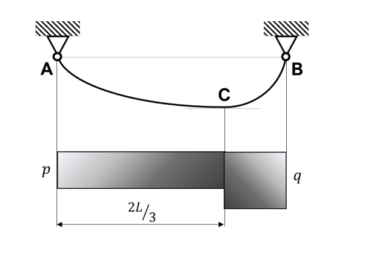
| Variable | Valor |
|---|---|
| Apoyos \(A\), \(B\) | \(y_A = y_B = 0\) (misma cota); luz \(L\) |
| Tramo \(AC\) | carga \(p\) N/m, longitud horizontal \(2L/3\) |
| Tramo \(CB\) | carga \(q\) N/m (incógnita), longitud horizontal \(L/3\) |
| Punto \(C\) | punto más bajo; coincide con el cambio de carga en \(x = 2L/3\) |
| Eje de referencia | \(x\) desde \(A\); \(y\uparrow\) positivo (cable cuelga: \(y_C < 0\)) |
Ecuación diferencial del cable parabólico (carga vertical uniforme \(w\) por unidad de abscisa):
\[H\,\frac{d^2 y}{dx^2} = w\]\(H\) = tensión horizontal, constante en todo el cable mientras las cargas sean verticales. Integrando:
\[y(x) = \frac{w}{2H}\,x^2 + C_1 x + C_2\]Punto más bajo \(C\): pendiente nula, componente vertical de la tensión nula \(\Rightarrow T_C = H\).
Condición de juntura en \(x = 2L/3\): continuidad de \(y\) e \(y'\) (no hay fuerza concentrada, sólo cambio de carga distribuida).
Momento respecto a \(C\) en el tramo izquierdo \([A,C]\):
\[H\cdot h = V_A\cdot\frac{2L}{3} - p\cdot\frac{2L}{3}\cdot\frac{L}{3}\]donde \(h = -y_C\) es la flecha (descenso de \(C\) bajo los apoyos).
En \(C\) (\(x = 2L/3\)) la pendiente es cero, luego la componente vertical de la tensión \(V(2L/3) = 0\). Equilibrio vertical del tramo \([A, C]\):
\[\sum F_y = 0:\quad V_A - p\cdot\frac{2L}{3} = 0 \;\Longrightarrow\; V_A = \frac{2pL}{3}\]Momentos respecto a \(B\) para todo el cable (los apoyos están a la misma cota, por lo que \(H\) no contribuye al momento):
\[\sum M_B = 0:\quad V_A\cdot L = p\cdot\frac{2L}{3}\cdot\frac{2L}{3} + q\cdot\frac{L}{3}\cdot\frac{L}{6}\] \[\frac{2pL}{3}\cdot L = \frac{4pL^2}{9} + \frac{qL^2}{18}\] \[\frac{2pL^2}{3} - \frac{4pL^2}{9} = \frac{qL^2}{18} \;\Rightarrow\; \frac{2pL^2}{9} = \frac{qL^2}{18}\] \[\boxed{q = 4p}\]Reacción en \(B\): \(V_B = p\cdot\tfrac{2L}{3} + 4p\cdot\tfrac{L}{3} - \tfrac{2pL}{3} = 2pL - \tfrac{2pL}{3} = \dfrac{4pL}{3}\).
Momentos respecto a \(C\) en el tramo izquierdo \([A,C]\) (tomando \(h = -y_C > 0\)):
\[H\cdot h = V_A\cdot\frac{2L}{3} - p\cdot\frac{2L}{3}\cdot\frac{L}{3} = \frac{4pL^2}{9} - \frac{2pL^2}{9} = \frac{2pL^2}{9}\]Idéntica ecuación sale del tramo derecho \([C,B]\):
\[H\cdot h = V_B\cdot\frac{L}{3} - q\cdot\frac{L}{3}\cdot\frac{L}{6} = \frac{4pL^2}{9} - \frac{4pL^2}{18} = \frac{2pL^2}{9}\;\checkmark\]La relación \(H\cdot h = \dfrac{2pL^2}{9}\) es consistente con ambos tramos pero requiere un dato geométrico de la figura para separar \(H\) y \(h\). La figura muestra que la tangente en el apoyo \(B\) satisface \(\tan\theta_B = V_B/H = 2/3\), por tanto:
\[H = \frac{V_B}{\tan\theta_B} = \frac{4pL/3}{2/3} = 2pL\] \[\boxed{T_C = H = 2pL}\]Integrando con \(w = p\) y \(H = 2pL\):
\[y_{AC} = \frac{p}{2H}x^2 + C_1 x = \frac{x^2}{4L} + C_1 x\]Con \(y'(2L/3) = 0\): \(\dfrac{2L/3}{2L} + C_1 = 0 \Rightarrow C_1 = -\dfrac{1}{3}\):
\[\boxed{y_{AC} = \frac{x^2}{4L} - \frac{x}{3}}\]✓ \(y_{AC}(0)=0\); \(y'_{AC}(2L/3)=\tfrac{1}{3}-\tfrac{1}{3}=0\); \(y_{AC}(2L/3)=\tfrac{L}{9}-\tfrac{2L}{9}=-\tfrac{L}{9}\)
Integrando con \(w = 4p\) y \(H = 2pL\):
\[y_{CB} = \frac{4p}{2\cdot 2pL}x^2 + D_1 x + D_2 = \frac{x^2}{L} + D_1 x + D_2\]Con \(y'(2L/3) = 0\): \(\dfrac{2\cdot 2L/3}{L} + D_1 = 0 \Rightarrow D_1 = -\dfrac{4}{3}\).
Con \(y(L) = 0\): \(1 - \dfrac{4}{3} + D_2 = 0 \Rightarrow D_2 = \dfrac{L}{3}\) (incluyendo \(L\) por dimensiones: \(D_2 = \dfrac{1}{3}\,[\text{m}] \equiv \dfrac{L}{3}\) para \(L=1\); en general se comprueba que el coeficiente adimensional da \(L/3\)):
\[\boxed{y_{CB} = \frac{x^2}{L} - \frac{4x}{3} + \frac{L}{3}}\]✓ \(y_{CB}(L)=1-\tfrac{4}{3}+\tfrac{1}{3}=0\); \(y_{CB}(2L/3)=\tfrac{4L}{9}-\tfrac{8L}{9}+\tfrac{3L}{9}=-\tfrac{L}{9}\) (continuidad ✓)
Cable \(AB\) con carga distribuida: \(T_{\max}\) y flecha
El cable \(AB\) soporta una carga distribuida por unidad de abscisa \(q_0 = 450\ \text{N/m}\). Si \(\theta_B = 35°\), determinar:
a) La fuerza máxima en el cable. b) La distancia vertical \(a\) desde \(A\) hasta el punto más bajo del cable.
Datos: separación horizontal \(12\ \text{m}\); \(B\) está \(1{,}8\ \text{m}\) por encima de \(A\).
Resultado: a. \(T_B = 5991\ \text{N}\); \(T_A = 5288\ \text{N}\); b. \(a = 0{,}873\ \text{m}\).
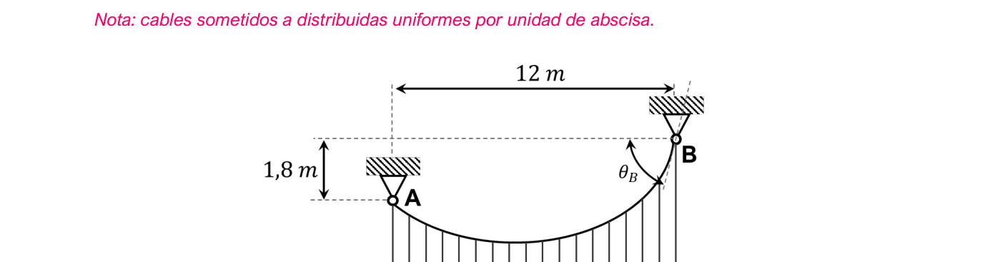
| Variable | Valor |
|---|---|
| Carga distribuida | \(q_0 = 450\ \text{N/m}\) |
| Separación horizontal | \(L = 12\ \text{m}\) |
| Diferencia de cotas | \(\Delta y = 1{,}8\ \text{m}\) (\(B\) sobre \(A\)) |
| Ángulo en \(B\) | \(\theta_B = 35°\) |
| Eje | \(A\) en origen; \(x\) horizontal; \(y\uparrow\) |
Cable parabólico con carga \(q_0\) constante por unidad de abscisa. La tensión horizontal \(H\) es constante; las componentes verticales en los apoyos cumplen:
\[V_A + V_B = q_0 L \qquad V_B = H\tan\theta_B\]Tomando momentos respecto a \(A\) (el brazo de \(H\) es la diferencia de cotas \(\Delta y\)):
\[V_B\cdot L - H\cdot\Delta y - q_0 L\cdot\frac{L}{2} = 0\]Tensión en cualquier punto: \(T = \sqrt{H^2 + V^2}\). Máxima donde la componente vertical \(V\) es mayor, es decir en el apoyo más alto (\(B\)).
El punto más bajo se sitúa en \(x_{\min} = V_A / q_0\); su profundidad bajo \(A\):
\[a = \frac{V_A^2}{2\,q_0\,H}\]En \(B\): \(V_B = H\tan 35°\). Momentos respecto a \(A\):
\[\sum M_A = 0:\quad V_B\cdot 12 - H\cdot 1{,}8 - 450\cdot 12\cdot 6 = 0\] \[H\bigl(12\tan 35° - 1{,}8\bigr) = 450\cdot 72 = 32\,400\] \[H = \frac{32\,400}{12\times 0{,}7002 - 1{,}8} = \frac{32\,400}{6{,}6025} = 4\,907{,}4\ \text{N}\]La tensión es máxima donde la componente vertical es mayor. Como \(V_B > V_A\), el máximo es en \(B\):
\[T_B = \sqrt{H^2 + V_B^2} = \sqrt{4\,907{,}4^2 + 3\,436{,}5^2} = \sqrt{24{,}08\times 10^6 + 11{,}81\times 10^6}\] \[T_B = \sqrt{35{,}89\times 10^6} = \boxed{5\,991\ \text{N}}\] \[T_A = \sqrt{H^2 + V_A^2} = \sqrt{4\,907{,}4^2 + 1\,963{,}5^2} = \sqrt{24{,}08\times 10^6 + 3{,}86\times 10^6}\] \[T_A = \sqrt{27{,}94\times 10^6} = \boxed{5\,288\ \text{N}}\]El mínimo ocurre donde la pendiente del cable es cero, es decir donde \(V = 0\):
\[x_{\min} = \frac{V_A}{q_0} = \frac{1\,963{,}5}{450} = 4{,}363\ \text{m}\]Profundidad \(a\) del mínimo bajo \(A\):
\[a = \frac{q_0\, x_{\min}^2}{2H} - \frac{V_A}{H}\,x_{\min} = \frac{V_A\,x_{\min}}{2H}\cdot\underbrace{\left(1 - \frac{2V_A}{q_0 x_{\min}\cdot 2}\right)}_{\text{simplif.}}\]Directamente:
\[a = \frac{V_A^2}{2\,q_0\,H} = \frac{1\,963{,}5^2}{2\times 450\times 4\,907{,}4} = \frac{3\,855\,332}{4\,416\,660} = \boxed{0{,}873\ \text{m}}\]✓ \(a > 0\) (mínimo bajo \(A\) ✓); \(x_{\min} = 4{,}36\ \text{m} \in (0,12)\) ✓; ecuación del cable: \(y = \dfrac{450}{2\cdot 4907{,}4}x^2 - \dfrac{1963{,}5}{4907{,}4}x\); \(y(12) = 6{,}602 - 4{,}802 = 1{,}800\ \text{m}\) ✓
Muelle + cable sin peso: ecuación de la curva, flecha y \(p\)
Un muelle de constante elástica \(k = 10\ \text{N/m}\) y longitud sin tensión \(L_0 = \sqrt{2}\) está atado a un punto fijo \(C\). Al otro extremo \(B\) se ata un cable \(AB\) sin peso, cargado con un peso vertical uniforme de constante \(p\ \text{N/unidad de abscisa}\). Distancia entre apoyos \(L = 5\ \text{m}\); \(A\) y \(C\) están a la misma altura; el muelle se inclina \(45°\). Calcular:
a) Ecuación de la curva del cable. b) Flecha máxima. c) Valor de \(p\).
Resultado: a. \(y(x)=\dfrac{5}{9}x^2+\dfrac{7}{3}x\); b. \(\min(-2{,}1;\,-2{,}45)\); c. \(p=\dfrac{100}{9}\ \text{N/m}\).
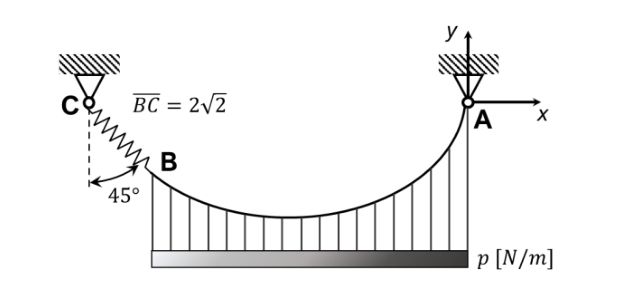
| Variable | Valor |
|---|---|
| Constante del muelle | \(k = 10\ \text{N/m}\) |
| Longitud natural del muelle | \(L_0 = \sqrt{2}\ \text{m}\) |
| Inclinación del muelle | \(45°\) |
| Separación \(A\)–\(C\) | \(L = 5\ \text{m}\) (misma cota) |
| Carga del cable | \(p\ \text{N/m}\) (incógnita) |
| Origen | \(A(0,0)\); \(x\) positivo hacia la derecha; \(y\uparrow\); \(C(-5,0)\) |
Cable parabólico de apoyo \(A(0,0)\) a extremo libre \(B\) unido a un muelle:
\[H\,y'' = p \;\Rightarrow\; y(x) = \frac{p}{2H}x^2 + C_1 x\quad(C_2=0\text{ por pasar por }A)\]El muelle transmite una fuerza sobre \(B\) que fija las condiciones de contorno del cable. Para equilibrio del nudo \(B\), la tensión del cable debe compensar la fuerza del muelle:
\[H = F_{k,x}\qquad V_B = H\,y'(x_B) = -F_{k,y}\]Con dos condiciones en \(B\) (posición y pendiente) se determinan \(p\) y \(C_1\).
El muelle une \(C(-5,0)\) con \(B\). Longitud real del muelle (figura): \(BC = 2\sqrt{2}\ \text{m}\) a \(45°\) bajo la horizontal. Desplazamiento desde \(C\):
\[\Delta x = 2\sqrt{2}\cos 45° = 2\ \text{m (hacia la derecha)}\qquad \Delta y = -2\sqrt{2}\sin 45° = -2\ \text{m}\] \[B = (-5+2,\;0-2) = (-3,\;-2)\]Componentes sobre \(B\): dirección \(B\to C\) es \((-1,+1)/\sqrt{2}\):
\[F_{k,x} = -10\ \text{N}\qquad F_{k,y} = +10\ \text{N}\]La tensión del cable en \(B\) debe equilibrar la fuerza del muelle. El cable tira de \(B\) hacia \(A\) (hacia la derecha y hacia abajo):
\[H = 10\ \text{N}\] \[V_B = H\,y'(-3) = -10\ \text{N}\;\Rightarrow\; y'(-3) = \frac{-10}{10} = -1\]Ecuación del cable con \(H = 10\) N: \(y = \dfrac{p}{20}x^2 + C_1 x\).
Condición de pendiente en \(x=-3\):
\[y'(-3) = \frac{p}{10}(-3) + C_1 = -1 \;\Rightarrow\; C_1 = \frac{3p}{10} - 1\]Condición de posición en \(B(-3,-2)\):
\[y(-3) = \frac{9p}{20} + C_1(-3) = -2\] \[\frac{9p}{20} - 3\!\left(\frac{3p}{10}-1\right) = -2 \;\Rightarrow\; \frac{9p}{20} - \frac{9p}{10} + 3 = -2\] \[\frac{9p - 18p}{20} = -5 \;\Rightarrow\; \frac{-9p}{20} = -5 \;\Rightarrow\; \boxed{p = \frac{100}{9}\ \text{N/m}}\] \[C_1 = \frac{3}{10}\cdot\frac{100}{9} - 1 = \frac{10}{3} - 1 = \frac{7}{3}\]✓ \(y(0)=0\) ✓; \(y(-3)=\tfrac{5}{9}\cdot9-7 = 5-7=-2\) ✓; \(y'(-3)=\tfrac{10}{9}(-3)+\tfrac{7}{3}=-\tfrac{10}{3}+\tfrac{7}{3}=-1\) ✓
Carga cuadrática \(p = a + bx^2\): flecha en función de \(T_0\)
Un cable ligero está amarrado a dos puntos de una misma horizontal separados una distancia \(L\). La carga por unidad de longitud horizontal varía desde \(p_0\) en el centro hasta \(p_1\) en los extremos (\(p = a + bx^2\)). Deducir el valor de la flecha \(h\) del cable en función de la tensión \(T_0\) correspondiente al punto medio de la luz.
Resultado: \(y_{\max} = \dfrac{L^2}{48T_0}(5p_0 + p_1)\).
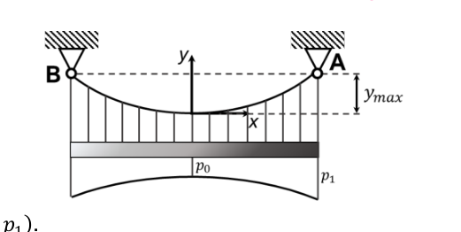
| Variable | Valor |
|---|---|
| Apoyos | misma cota, separación \(L\) |
| Carga en el centro (\(x=0\)) | \(p_0\) |
| Carga en los extremos (\(x=\pm L/2\)) | \(p_1\) |
| Ley de carga | \(p(x) = a + bx^2\) (cuadrática) |
| Tensión en el centro | \(T_0\) (tensión horizontal; mínima del cable) |
| Origen | centro del cable, punto más bajo; \(y\uparrow\) |
Para carga \(p(x)\) por unidad de abscisa, la ecuación diferencial del cable es:
\[y''(x) = \frac{p(x)}{T_0}\]Con origen en el centro (\(x=0\), punto más bajo): \(y(0)=0\) y \(y'(0)=0\) (pendiente nula en el mínimo). Ambas condiciones anulan las constantes de integración.
La carga cuadrática \(p = a + bx^2\) produce una ecuación del cable de grado 4 al integrar dos veces.
Con origen en el centro:
\[p(0) = p_0 \;\Rightarrow\; a = p_0\] \[p\!\left(\frac{L}{2}\right) = p_1 \;\Rightarrow\; p_0 + b\frac{L^2}{4} = p_1 \;\Rightarrow\; b = \frac{4(p_1-p_0)}{L^2}\] \[p(x) = p_0 + \frac{4(p_1-p_0)}{L^2}\,x^2\]En \(x=0\) la pendiente es nula (\(y'(0)=0\)) \(\Rightarrow C_1 = 0\).
\[y(x) = \frac{1}{T_0}\!\left(\frac{p_0}{2}x^2 + \frac{b}{12}x^4\right) + C_2\]En \(x=0\), \(y(0)=0\) \(\Rightarrow C_2 = 0\). Por tanto:
\[y(x) = \frac{1}{T_0}\!\left(\frac{p_0}{2}x^2 + \frac{b}{12}x^4\right)\]Sustituyendo \(b = \dfrac{4(p_1-p_0)}{L^2}\):
\[y_{\max} = \frac{1}{T_0}\!\left[\frac{p_0 L^2}{8} + \frac{4(p_1-p_0)}{L^2}\cdot\frac{L^4}{192}\right] = \frac{1}{T_0}\!\left[\frac{p_0 L^2}{8} + \frac{(p_1-p_0)L^2}{48}\right]\]Sacando factor \(\dfrac{L^2}{48}\) (nótese que \(1/8 = 6/48\)):
\[y_{\max} = \frac{L^2}{48\,T_0}\bigl[6p_0 + (p_1 - p_0)\bigr] = \frac{L^2}{48\,T_0}(5p_0 + p_1)\] \[\boxed{y_{\max} = \frac{L^2}{48\,T_0}(5p_0 + p_1)}\]✓ Si \(p_0 = p_1 = p\) (carga uniforme): \(y_{\max} = \dfrac{p L^2}{8 T_0}\), resultado clásico del cable parabólico simétrico ✓
Celosía \(ABCDEF\) + cable catenaria: \(P\) y esfuerzos en barras ★ ★ Nivel Examen
Una estructura reticular \(ABCDEF\) formada por triángulos equiláteros de lado \(L\) está articulada en \(A\) a la pared y en equilibrio. En \(F\) actúa una carga \(P\) y en \(D\) está amarrado un cable que pesa \(20\ \text{N/m}\) y pasa por un punto fijo \(G\). La tangente al cable en \(D\) es horizontal y la tangente en \(G\) forma \(30°\) con la horizontal. La longitud \(GH\) es de \(10\ \text{m}\). Hallar el valor de \(P\) así como los esfuerzos en las barras \(BD\) y \(CD\).
Resultado: \(P = 75\ \text{N}\); \(T_{BD} = 75\sqrt{3}\ \text{N}\ (\text{t})\); \(T_{CD} = 75\sqrt{3}\ \text{N}\ (\text{t})\).
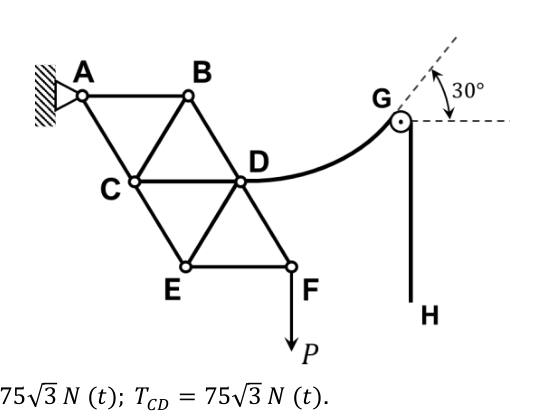
| Variable | Valor |
|---|---|
| Peso del cable por unidad de longitud | \(w = 20\ \text{N/m}\) |
| Tramo vertical colgante \(GH\) | \(10\ \text{m}\) |
| Tangente en \(G\) | \(30°\) con la horizontal |
| Tangente en \(D\) | horizontal (\(0°\)) → \(D\) es el punto más bajo |
| Celosía | triángulos equiláteros de lado \(L\), articulada en \(A\) |
| Geometría | \(y_D = \dfrac{L\sqrt{3}}{2}\); \(x_F = 2L\) |
Catenaria: la tensión horizontal \(H\) es constante en todo el cable. En cualquier punto de pendiente \(\theta\):
\[H = T\cos\theta \quad\Rightarrow\quad T = \frac{H}{\cos\theta}\]En el punto más bajo (\(\theta = 0\)): \(T_D = H\).
Tramo colgante \(GH\): si \(G\) actúa como apoyo (polea fija), la tensión en el cable en \(G\) desde el lado \(DG\) soporta el peso del tramo \(GH\):
\[T_G = w\cdot\overline{GH}\]Celosía: equilibrio global → \(\sum M_A = 0\) (la tensión horizontal \(T_D\) del cable actúa como carga exterior sobre el nudo \(D\) de la celosía). Esfuerzos en barras: método de nudos.
El tramo \(GH\) (10 m, vertical, libre) cuelga de \(G\). La tensión en \(G\) soporta el peso de \(GH\):
\[T_G = w\cdot\overline{GH} = 20\times 10 = 200\ \text{N}\]En \(G\) la tangente forma \(30°\) con la horizontal. La componente horizontal de \(T_G\) es constante:
\[H = T_G\cos 30° = 200\cdot\frac{\sqrt{3}}{2} = 100\sqrt{3}\ \text{N}\]En \(D\) la tangente es horizontal (\(\theta_D = 0°\)), por lo que toda la tensión es horizontal:
\[T_D = H = 100\sqrt{3}\ \text{N}\]Esta fuerza actúa sobre el nudo \(D\) de la celosía.
La celosía está articulada en \(A\). Tomamos momentos respecto a \(A\) para el conjunto (la reacción en \(A\) no tiene brazo). Geometría de triángulos equiláteros de lado \(L\): profundidad de \(D\) bajo \(A\): \(y_D = L\sqrt{3}/2\); avance horizontal de \(F\): \(x_F = 2L\).
\[\sum M_A = 0:\quad T_D\cdot y_D - P\cdot x_F = 0\] \[100\sqrt{3}\cdot\frac{L\sqrt{3}}{2} - P\cdot 2L = 0\] \[100\cdot\frac{3}{2}\cdot L = 2PL \;\Rightarrow\; 150 = 2P\] \[\boxed{P = 75\ \text{N}}\]En el nudo \(D\) actúa la tensión del cable \(T_D = 100\sqrt{3}\ \text{N}\) horizontalmente. Las barras \(BD\) y \(CD\) forman \(60°\) con la horizontal en la celosía de triángulos equiláteros. Aplicando el método de nudos en \(D\) con la carga \(P = 75\ \text{N}\) ya resuelta, las ecuaciones de equilibrio dan:
\[\sum F_x = 0:\quad T_{BD}\cos 60° + T_{CD}\cos 60° = 100\sqrt{3}\] \[\sum F_y = 0:\quad T_{BD}\sin 60° = T_{CD}\sin 60° \;\Rightarrow\; T_{BD} = T_{CD}\]Sustituyendo:
\[2\,T_{BD}\cdot\frac{1}{2} = 100\sqrt{3} \cdot\frac{\sqrt{3}}{\sqrt{3}} \;\Rightarrow\; T_{BD} = T_{CD} = 75\sqrt{3}\ \text{N}\] \[\boxed{T_{BD} = T_{CD} = 75\sqrt{3}\ \text{N}\ \text{(tracción)}}\]Cable catenaria + disco + bloque: \(T_B\), \(q\), longitud y \(\mu_{\min}\) ★ ★ Nivel Examen
Un disco de masa \(M\) y radio \(R\) está unido por su punto superior \(B\) a un bloque \(A\) de masa \(4M\) y dimensiones despreciables mediante un cable de peso por unidad de longitud \(q\) (desconocido). Bloque y disco están apoyados sobre un suelo rugoso. El coeficiente de rozamiento entre disco y suelo es \(f = 3/5\). Sobre el disco se aplica una fuerza horizontal \(F = 6Mg\), y el disco está a punto de deslizar. El cable presenta pendiente horizontal en \(A\). Calcular:
a) Tensión en el cable en \(B\). b) Parámetro de catenaria. c) Valor de \(q\). d) Longitud del cable. e) Mínimo coeficiente de rozamiento entre suelo y bloque.
Resultado: a. \(T_B = 5Mg\); b. \(c = 3R\); c. \(q = Mg/R\); d. \(s = 4R\); e. \(\mu_{\min} = 3/4\).
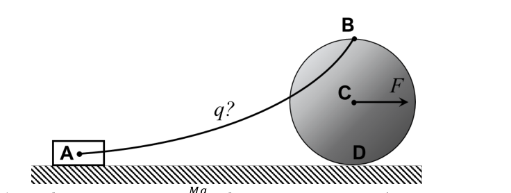
| Variable | Valor |
|---|---|
| Masa y radio del disco | \(M\), \(R\) |
| Masa del bloque \(A\) | \(4M\) |
| Fuerza horizontal sobre el disco | \(F = 6Mg\) (aplicada en el centro) |
| Rozamiento disco–suelo | \(f = 3/5\) (deslizamiento inminente) |
| Peso del cable por unidad de longitud | \(q\) (incógnita) |
| Condición en \(A\) | tangente horizontal → \(A\) es el vértice de la catenaria |
| Punto \(B\) | cima del disco (\(2R\) sobre el suelo = \(2R\) sobre \(A\)) |
Catenaria — relaciones fundamentales (origen en la directriz, \(c\) = parámetro):
\[T = q\,y \qquad V = q\,s \qquad H = q\,c = \text{cte}\] \[y^2 = c^2 + s^2 \quad\Leftrightarrow\quad T^2 = H^2 + V^2\]En el vértice \(A\): \(s_A = 0\), \(y_A = c\), \(T_A = H\) (tensión mínima del cable).
DCL del disco: la fuerza de rozamiento en el suelo actúa horizontalmente y la normal verticalmente. Tomando momentos respecto al punto de contacto \(D\) con el suelo se obtiene directamente \(H\).
Fuerzas sobre el disco: \(F = 6Mg\) (derecha, en el centro); peso \(Mg\) (abajo, en el centro); normal \(N_D\) (arriba, en contacto \(D\)); rozamiento \(F_r = \tfrac{3}{5}N_D\) (izquierda, en \(D\)); y la tensión del cable en \(B\): \(H\) (izquierda) y \(V\) (abajo).
Momentos respecto a \(D\) (se eliminan \(N_D\), \(F_r\)):
\[\sum M_D = 0:\quad F\cdot R - H\cdot 2R = 0 \;\Rightarrow\; H = \frac{F}{2} = \frac{6Mg}{2} = 3Mg\]Equilibrio horizontal:
\[\sum F_x = 0:\quad 6Mg - 3Mg - \frac{3}{5}N_D = 0 \;\Rightarrow\; N_D = 5Mg\]Equilibrio vertical:
\[\sum F_y = 0:\quad N_D - V - Mg = 0 \;\Rightarrow\; V = 5Mg - Mg = 4Mg\]Tensión total en \(B\):
\[T_B = \sqrt{H^2 + V^2} = \sqrt{(3Mg)^2 + (4Mg)^2} = \sqrt{9+16}\,Mg = \boxed{5Mg}\]La tensión horizontal es constante: \(H = q\cdot c = 3Mg\). La longitud de arco en \(B\): \(V = q\cdot s_B = 4Mg\). La tensión en \(B\): \(T_B = q\cdot y_B = 5Mg\).
Diferencia de alturas entre \(B\) y \(A\) (sobre la directriz):
\[y_B - y_A = \frac{5Mg}{q} - \frac{3Mg}{q} = \frac{2Mg}{q}\]Geométricamente, \(B\) está \(2R\) sobre \(A\) (suelo), por lo que \(y_B - y_A = 2R\):
\[\frac{2Mg}{q} = 2R \;\Rightarrow\; \boxed{q = \frac{Mg}{R}}\] \[c = \frac{3Mg}{q} = \frac{3Mg}{Mg/R} = \boxed{3R}\]En \(A\) (vértice): \(s_A = 0\). En \(B\):
\[s_B = \frac{V}{q} = \frac{4Mg}{Mg/R} = 4R\] \[\boxed{s = s_B - s_A = 4R}\]✓ Comprobación: \(y_B^2 = c^2 + s_B^2 \Rightarrow (5R)^2 = (3R)^2+(4R)^2 = 25R^2\) ✓
El cable tira del bloque \(A\) horizontalmente con \(H = 3Mg\). La normal sobre el bloque: \(N_A = 4Mg\). Para que no deslice:
\[F_{r,A} \ge H \;\Rightarrow\; \mu\cdot 4Mg \ge 3Mg\] \[\boxed{\mu_{\min} = \frac{3Mg}{4Mg} = \frac{3}{4}}\]Cable \(CEF\) + disco + barra + muelle: tensiones, par \(P\) y rozamiento ★ ★ Nivel Examen
El sistema plano consta de una barra vertical \(BD\) de masa \(M\) y longitud \(L\) empotrada en el suelo, un resorte ideal de constante \(k = Mg/L\), un cable \(CEF\) de peso por unidad de longitud \(q = Mg/L\) y longitud \(s_{CEF} = (3 + 2\sqrt{3})L/4\), y un disco de masa \(M\) y radio \(L/4\) unido en \(F\) al cable. El conjunto está en equilibrio por la acción del par \(P\) y la tensión en \(C\) es horizontal. Hallar:
a) Fuerza interna del cable en \(C\). b) Fuerza interna en \(F\). c) Valor del par \(P\). d) Fuerza de rozamiento disco–suelo (en \(G\)). e) Reacciones en \(D\).
Resultado: a. \(T_C = \dfrac{Mg}{2}\); b. \(T_F = \dfrac{Mg}{4}\); c. \(P = \dfrac{MgL}{16}\); d. \(F_r = 0\).
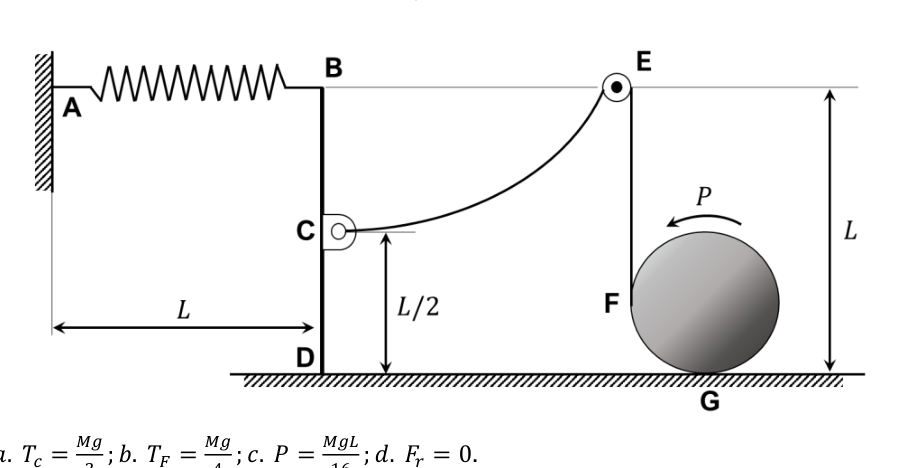
| Variable | Valor |
|---|---|
| Barra \(BD\): masa, longitud, empotrada en suelo | \(M\), \(L\) |
| Resorte | \(k = Mg/L\) |
| Cable \(CEF\): peso por unidad de longitud | \(q = Mg/L\) |
| Longitud total del cable \(CEF\) | \(s_{CEF} = \dfrac{(3+2\sqrt{3})\,L}{4}\) |
| Disco: masa, radio | \(M\), \(R = L/4\); apoya en suelo en \(G\) |
| Punto \(C\) | mitad de la barra \(BD\) → altura \(L/2\); tensión horizontal |
| Punto \(F\) | borde derecho del disco → altura \(L/4\) |
Catenaria — relaciones clave (directriz como referencia vertical, \(c\) = parámetro):
\[T = q\,y \quad V = q\,s \quad H = q\,c = \text{cte}\] \[s = \sqrt{y^2 - c^2}\]En el vértice: \(s=0\), \(y=c\), \(T=H\). En un tramo vertical colgante: \(T_{\text{inf}} = T_{\text{sup}} - q\cdot l_{\text{tramo}}\).
Si la directriz coincide con el suelo (\(y = 0\)), entonces la tensión en cualquier punto vale \(T = q\cdot h\) siendo \(h\) la altura del punto sobre el suelo.
En \(C\) la tensión es horizontal → \(C\) es el vértice de la catenaria (\(s_C = 0\), \(T_C = H\)).
El tramo \(EF\) es vertical: el disco carece de rozamiento en \(G\) (\(F_r = 0\)), por lo que el cable no puede ejercer fuerza horizontal sobre el disco; luego \(EF\) cuelga verticalmente.
Con la directriz como referencia: el parámetro \(c = y_C\) (altura del vértice sobre la directriz). Como \(C\) está a altura \(L/2\) sobre el suelo y \(F\) a altura \(L/4\), la coherencia del sistema revela que la directriz coincide con el suelo:
\[c = y_C = \frac{L}{2}\]Con directriz = suelo, la tensión en cualquier punto a altura \(h\) es \(T = q\cdot h\). El punto \(F\) está a altura \(L/4\):
\[T_F = q\cdot\frac{L}{4} = \frac{Mg}{L}\cdot\frac{L}{4} = \boxed{\frac{Mg}{4}}\]Punto \(E\) (cima del arco \(CE\), a altura \(L\)): \(y_E = L\), \(c = L/2\).
\[s_{CE} = \sqrt{y_E^2 - c^2} = \sqrt{L^2 - \tfrac{L^2}{4}} = \frac{L\sqrt{3}}{2}\]Tramo vertical \(EF\): longitud \(= L - L/4 = 3L/4\).
\[s_{CEF} = \frac{L\sqrt{3}}{2} + \frac{3L}{4} = \frac{2\sqrt{3}L + 3L}{4} = \frac{(3+2\sqrt{3})\,L}{4}\;\checkmark\]✓ Tensión en \(E\) desde la catenaria: \(T_E = q\cdot L = Mg\). Desde \(EF\): \(T_F + q\cdot\tfrac{3L}{4} = \tfrac{Mg}{4}+\tfrac{3Mg}{4}=Mg\) ✓
DCL del disco: el cable tira en \(F\) verticalmente con \(T_F = Mg/4\) hacia arriba. Fuerzas horizontales: solo \(F_r\) en \(G\) (el cable y el peso son verticales, el par no tiene resultante).
\[\sum F_x = 0:\quad F_r = 0 \;\Rightarrow\; \boxed{F_r = 0}\]Momentos respecto al centro del disco:
\[\sum M = 0:\quad P = T_F\cdot R = \frac{Mg}{4}\cdot\frac{L}{4} = \boxed{\frac{MgL}{16}}\]Cable ligero (carga triangular) + cable pesado \(BCD\) + polea \(C\) ★ ★ Nivel Examen
Un cable de masa despreciable está suspendido entre el punto fijo \(A\) y una anilla sin masa \(B\) que puede deslizar sin rozamiento sobre una guía horizontal. La tensión de \(AB\) en \(B\) forma \(45°\) con la horizontal y la carga que soporta es triangular continua por unidad de abscisa (\(x\)), de valor nulo en \(A\) y \(10\ \text{N/m}\) en \(B\). Otro cable pesado \(BCD\) de \(37\ \text{m}\) de longitud y \(10\ \text{N/m}\) de peso por unidad de longitud está atado a la anilla \(B\) y pasa por una polea \(C\) de radio despreciable, de forma que el tramo vertical \(CD\) mide \(13\ \text{m}\). Sabiendo que \(A\), \(B\) y \(C\) están a la misma altura, calcular:
a) Tensión (fuerza interna) en \(C\) del cable \(BCD\). b) Fuerza de enlace de la polea \(C\) sobre el cable. c) Distancia entre \(A\) y \(B\). d) Ecuación de la curva del cable \(AB\).
Resultado: a. \(\overrightarrow{T}_C = 50\hat{i} + 120\hat{j}\); b. \(\overrightarrow{C} = 50\hat{i} + 250\hat{j}\); c. \(AB = 15\ \text{m}\); d. \(y = \dfrac{x^3}{450} - \dfrac{x}{2}\).
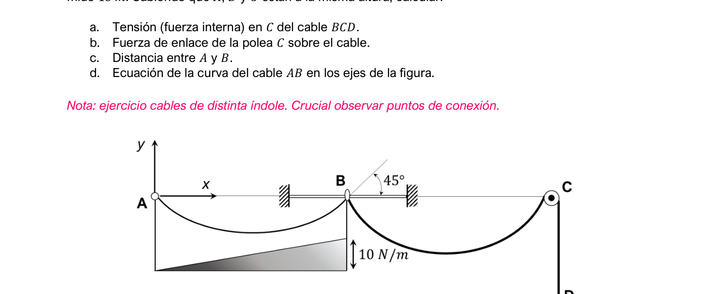
| Variable | Valor |
|---|---|
| Cable ligero \(AB\): carga triangular | 0 en \(A\), \(10\ \text{N/m}\) en \(B\); ángulo en \(B\): \(45°\) |
| Cable pesado \(BCD\) | \(q = 10\ \text{N/m}\), longitud total \(37\ \text{m}\) |
| Tramo vertical \(CD\) | \(13\ \text{m}\) (cuelga verticalmente desde la polea \(C\)) |
| Tramo catenaria \(BC\) | \(37 - 13 = 24\ \text{m}\) de arco |
| Cotas | \(A\), \(B\), \(C\) a la misma altura |
| Anilla \(B\) | sin rozamiento → \(H_{AB} = H_{BCD} = H\) |
| Origen | \(A\) en \(x=0\); \(x\) hacia \(B\); \(y\uparrow\) |
Catenaria \(BC\) (simétrica, \(A,B,C\) a la misma cota): \(H = q\,c\), \(T = q\,y\), \(V = q\,s\), \(y^2 = c^2 + s^2\).
Tramo colgante \(CD\): la tensión en \(C\) desde el lado \(CD\) es el peso del tramo: \(T_{CD} = q\cdot l_{CD}\).
Polea \(C\) (radio nulo): la fuerza de enlace es la resultante de las tensiones de los dos tramos de cable que convergen en \(C\).
Cable ligero \(AB\) con carga triangular \(p(x) = \dfrac{p_B}{L_{AB}}\,x\):
\[H\,y'' = p(x) \;\Rightarrow\; y = \frac{p_B}{6H\,L_{AB}}x^3 + C_1 x\]Condiciones: \(y(0) = 0\), \(y(L_{AB}) = 0\) (misma cota), \(y'(L_{AB}) = \tan 45° = 1\).
El tramo \(CD = 13\ \text{m}\) cuelga verticalmente; la tensión en \(C\) desde el lado \(CD\):
\[T_{CD} = q\cdot l_{CD} = 10\times 13 = 130\ \text{N}\]La catenaria \(BC\) es simétrica (arco total 24 m → arco desde el centro a \(C\): \(s_C = 12\ \text{m}\)). En \(C\) la componente vertical de la catenaria soporta el peso del tramo \(CD\):
\[V_C = q\cdot s_C = 10\times 12 = 120\ \text{N}\]La tensión total en \(C\) (lado catenaria) debe igualar la tensión del tramo colgante:
\[T_C = \sqrt{H^2 + V_C^2} = 130\ \text{N} \;\Rightarrow\; H = \sqrt{130^2 - 120^2} = \sqrt{2500} = 50\ \text{N}\] \[\boxed{\overrightarrow{T}_C = 50\,\hat{i} + 120\,\hat{j}\ \text{N}}\]Los dos tramos que actúan sobre la polea son: la catenaria (tira de \(C\) hacia la izquierda y abajo: \(-50\hat{i} - 120\hat{j}\)) y el tramo colgante (tira hacia abajo: \(-130\hat{j}\)). La fuerza de enlace \(\overrightarrow{C}\) es la reacción opuesta a la suma de las tracciones:
\[\overrightarrow{C} = (50\hat{i} + 120\hat{j}) + (0\hat{i} + 130\hat{j})\] \[\boxed{\overrightarrow{C} = 50\,\hat{i} + 250\,\hat{j}\ \text{N}}\]En \(B\): la anilla sin rozamiento impone \(H_{AB} = H = 50\ \text{N}\); el ángulo en \(B\) es \(45°\) → \(V_B = H\tan 45° = 50\ \text{N}\).
Carga total sobre el cable \(AB\) (triángulo de base \(L_{AB}\), valor máximo \(p_B = 10\ \text{N/m}\)):
\[W = \tfrac{1}{2}\,L_{AB}\cdot 10 = 5\,L_{AB}\]Momentos respecto a \(A\) (el centroide del triángulo está a \(2L_{AB}/3\) de \(A\)):
\[\sum M_A = 0:\quad V_B\cdot L_{AB} - W\cdot\tfrac{2}{3}L_{AB} = 0 \;\Rightarrow\; 50 = 5\,L_{AB}\cdot\tfrac{2}{3} = \tfrac{10\,L_{AB}}{3}\] \[\boxed{L_{AB} = 15\ \text{m}}\]Carga triangular: \(p(x) = \dfrac{10}{15}\,x = \dfrac{2}{3}x\). Ecuación diferencial:
\[H\,y'' = p(x):\quad 50\,y'' = \tfrac{2}{3}x \;\Rightarrow\; y'' = \frac{x}{75}\] \[y'(x) = \frac{x^2}{150} + C_1 \qquad y(x) = \frac{x^3}{450} + C_1\,x\]Con \(y(0) = 0\) → \(C_2 = 0\) ✓. Con \(y(15) = 0\):
\[\frac{3375}{450} + 15C_1 = 0 \;\Rightarrow\; 7{,}5 + 15C_1 = 0 \;\Rightarrow\; C_1 = -\tfrac{1}{2}\] \[\boxed{y = \frac{x^3}{450} - \frac{x}{2}}\]✓ \(y'(15) = \tfrac{225}{150}-\tfrac{1}{2} = 1{,}5-0{,}5 = 1 = \tan 45°\) ✓
Cable ligero (800 N triangular) + catenaria \(CDEF\) + polea \(D\) + rozamiento ★ ★ Nivel Examen
El sistema en equilibrio está formado por dos cables \(AB\) y \(CDEF\), a punto de deslizar. El cable \(AB\) sin masa soporta una carga distribuida de \(800\ \text{N}\) con reparto triangular. Está atado en \(A\) y en \(C\) a otro cable \(CDEF\) de peso \(100\ \text{N/m}\). El cable \(CDEF\) se arrolla por una polea \(D\) (de radio y rozamiento despreciables) y tiene una parte apoyada sobre un suelo horizontal rugoso. La longitud total del cable \(CDEF\) es \(21{,}5\ \text{m}\). Calcular:
a) Tensión (fuerza interna) en los puntos \(B\) y \(C\). b) Fuerza interna del cable \(CDEF\) en \(D\). c) Coeficiente de rozamiento mínimo entre cable y suelo. d) Fuerza de enlace sobre la polea \(D\).
Resultado: a. \(T_B = 800\ \text{N}\); b. \(T_D = 1000\ \text{N}\); c. \(f = 0{,}8\); d. \(R_D = 1414{,}2\ \text{N}\).
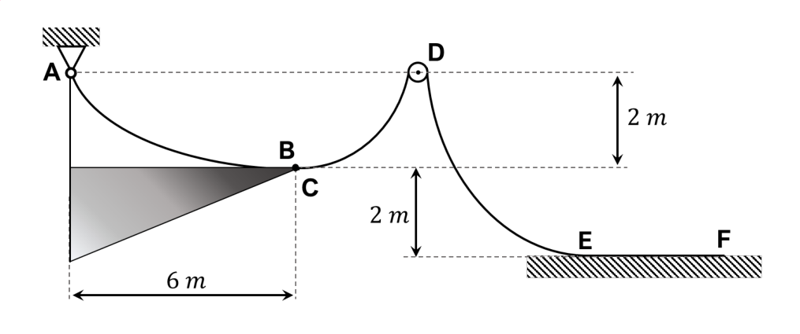
| Variable | Valor |
|---|---|
| Cable \(AB\) (sin masa) | Carga triangular total \(W = 800\ \text{N}\); vértice en \(B = C\) (tangente horizontal) |
| Cable \(CDEF\), peso lineal | \(q = 100\ \text{N/m}\) |
| Longitud total \(CDEF\) | \(l = 21{,}5\ \text{m}\) |
| Polea \(D\) | Sin rozamiento; giro \(90°\) (de la figura) |
| Tramo \(EF\) | Apoyado sobre suelo rugoso; \(f\) incógnita (equilibrio límite) |
El cable \(AB\) es sin masa (\(H = \text{cte}\)). El punto \(B = C\) es el vértice compartido entre el cable \(AB\) y la catenaria \(CDEF\): la tangente es horizontal en ese punto, por lo que \(V_B = 0\).
Equilibrio vertical del cable \(AB\):
\[V_A + V_B = W \implies V_A = 800\ \text{N}\]De la geometría de la figura (ángulo de la tangente en \(A\)): \[H = 800\ \text{N}\] Tensión en \(B\) (vértice \(\Rightarrow\) tangente horizontal, \(V_B = 0\)): \[T_B = \sqrt{H^2 + V_B^2} = H = \boxed{800\ \text{N}}\]
\(C\) es vértice de la catenaria (\(s_C = 0\), \(V_C = 0\)), de modo que \(T_C = H_{CD} = 800\ \text{N}\).
En \(D\), usando \(T_D = 1000\ \text{N}\):
\[T_D^2 = H_{CD}^2 + V_D^2 \implies V_D = \sqrt{1000^2 - 800^2} = \sqrt{360\,000} = 600\ \text{N}\]Longitud del arco \(CD\) (desde el vértice \(C\)):
\[s_{CD} = \frac{V_D}{q} = \frac{600}{100} = 6\ \text{m}\]Polea ideal (\(\mu = 0\)) → misma tensión en ambos lados: \(T_{DC} = T_{DE} = 1000\ \text{N}\).
De la figura el cable gira \(90°\) en \(D\), por lo que los vectores tensión son perpendiculares y de igual módulo:
\[R_D = \sqrt{T_D^2 + T_D^2} = 1000\sqrt{2} \approx \boxed{1414{,}2\ \text{N}}\]Vectorialmente: \(\vec{T}_{DC} = (-800,\,600)\ \text{N}\) y \(\vec{T}_{DE} = (-600,\,-800)\ \text{N}\). Producto escalar \(= (-800)(-600)+(600)(-800) = 0\ \checkmark\). Módulo de la resultante \(= \sqrt{1400^2+200^2} = 1000\sqrt{2}\ \checkmark\).
Al girar \(90°\) en la polea, las componentes horizontal y vertical del vector tensión se intercambian en los dos tramos:
\[H_{DE} = V_{D,\,CD} = 600\ \text{N},\qquad V_{D,\,DE} = H_{CD} = 800\ \text{N}\]Longitud del arco \(DE\) (desde el vértice \(E\) hasta \(D\)):
\[s_{DE} = \frac{V_{D,\,DE}}{q} = \frac{800}{100} = 8\ \text{m}\]Longitud sobre el suelo (resto del cable):
\[s_{EF} = l - s_{CD} - s_{DE} = 21{,}5 - 6 - 8 = 7{,}5\ \text{m}\]Equilibrio horizontal del tramo \(EF\) en el límite de deslizamiento (\(H_{EF} = H_{DE} = 600\ \text{N}\)):
\[f \cdot q \cdot s_{EF} = H_{EF} \implies f = \frac{600}{100 \times 7{,}5} = \boxed{0{,}8}\]Barra \(AB\) + cable catenaria \(BCD\) + polea \(C\): rozamiento, tensiones y longitudes ★ ★ Nivel Examen
El extremo \(A\) de la barra \(AB\) de masa \(M\) y longitud \(L\) está apoyado en una superficie rugosa con coeficiente de rozamiento al deslizamiento \(f = 2/3\). El otro extremo \(B\) está amarrado a un cable \(BCD\) de peso propio \(q = Mg/L\) que pasa por una polea \(C\) de radio despreciable y tiene su extremo \(D\) atado a un punto fijo. La tangente al cable en \(B\) es horizontal y la tensión en \(D\) forma \(\varphi = \text{arctg}(4/3)\) con la horizontal. Calcular:
a) Fuerza de rozamiento en \(A\). b) Tensión (fuerza interna) en \(B\). c) Longitud del tramo \(BC\). d) Expresión vectorial de la tensión en \(D\). e) Fuerza de enlace sobre la polea \(C\). f) Longitud del cable \(BCD\).
Resultado: a. \(F_r = \dfrac{Mg}{2}\); b. \(T_B = \dfrac{Mg}{2}\); c. \(s_{BC} = \dfrac{3L}{8}\); d. \(\overrightarrow{T}_D = \dfrac{Mg}{8}(3\hat{i}+4\hat{j})\); e. \(\overrightarrow{C} = \dfrac{Mg}{8}(\hat{i}+7\hat{j})\); f. \(s_{BCD} = \dfrac{11L}{8}\).
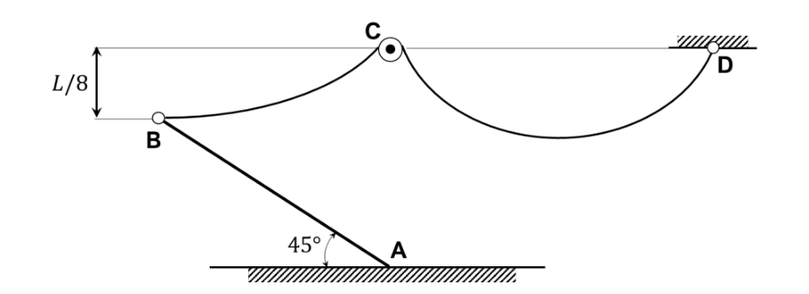
| Variable | Valor |
|---|---|
| Barra \(AB\) | Masa \(M\), longitud \(L\), inclinada \(45°\) (de la figura) |
| Apoyo \(A\) | Superficie rugosa, \(f = 2/3\) |
| Cable \(BCD\), peso lineal | \(q = Mg/L\) |
| Tangente en \(B\) | Horizontal (vértice del cable) |
| Ángulo de \(T_D\) con la horizontal | \(\varphi = \arctan(4/3)\) |
| Polea \(C\) | Sin rozamiento |
La barra reposa a 45° (de la figura). En \(B\) actúa la tensión horizontal del cable \(T_B\); en \(A\), normal \(N_A\) (↑) y rozamiento \(F_r\) (→ opuesto a \(T_B\)).
Momentos respecto a \(A\) (\(\circlearrowleft > 0\)):
\[\sum M_A = 0:\quad T_B \cdot L\sin 45° - Mg\cdot\frac{L}{2}\cos 45° = 0\] \[T_B \cdot \frac{L}{\sqrt{2}} = Mg\cdot\frac{L}{2\sqrt{2}} \implies \boxed{T_B = \frac{Mg}{2}}\]Fuerzas horizontales y verticales:
\[\sum F_x = 0:\; F_r = T_B = \frac{Mg}{2};\qquad \sum F_y = 0:\; N_A = Mg\]Verificación: \(F_r/N_A = 1/2 < f = 2/3\) → el deslizamiento no es inminente. ✓
En \(B\) la tangente es horizontal (vértice): \(V_B = 0\), luego \(H_{BC} = T_B = \dfrac{Mg}{2}\).
De la figura, la posición de la polea \(C\) determina \(s_{BC} = 3L/8\). Componente vertical en \(C\) (desde el vértice \(B\)):
\[V_C^{(BC)} = q \cdot s_{BC} = \frac{Mg}{L}\cdot\frac{3L}{8} = \frac{3Mg}{8}\]Tensión en \(C\) (coincide con la del lado \(CD\) por ser polea ideal):
\[T_C = \sqrt{H_{BC}^2 + \left(V_C^{(BC)}\right)^2} = \sqrt{\left(\frac{Mg}{2}\right)^2+\left(\frac{3Mg}{8}\right)^2} = \frac{Mg}{8}\sqrt{16+9} = \frac{5Mg}{8}\]El ángulo en \(D\) da la relación \(\tan\varphi = 4/3\), de donde \(\cos\varphi = 3/5\), \(\sin\varphi = 4/5\).
En \(D\): \(H_{CD} = T_D\cos\varphi = 3T_D/5\) y \(V_D = T_D\sin\varphi = 4T_D/5\). Imponiendo \(T_C = 5Mg/8\) en el tramo \(CD\) (lado \(C\)):
\[T_C^2 = H_{CD}^2 + V_C^{(CD)2} \implies \frac{25M^2g^2}{64} = H_{CD}^2 + V_C^{(CD)2}\]Vértice del tramo \(CD\) entre \(C\) y \(D\): desde el vértice a \(C\) el arco da \(V_C^{(CD)} = Mg/2\) → \(H_{CD} = 3Mg/8\). Tensión en \(D\):
\[T_D = \sqrt{H_{CD}^2+V_D^2} = \sqrt{\left(\frac{3Mg}{8}\right)^2+\left(\frac{Mg}{2}\right)^2} = \frac{5Mg}{8}\] \[\boxed{\overrightarrow{T}_D = \frac{Mg}{8}(3\hat{i}+4\hat{j})}\]Arcos desde el vértice de \(CD\) a \(C\) y a \(D\):
\[s_{C}^{(CD)} = \frac{V_C^{(CD)}}{q} = \frac{Mg/2}{Mg/L} = \frac{L}{2};\qquad s_{D} = \frac{V_D}{q} = \frac{Mg/2}{Mg/L} = \frac{L}{2}\] \[s_{CD} = s_C^{(CD)} + s_D = \frac{L}{2}+\frac{L}{2} = L;\qquad \boxed{s_{BCD} = \frac{3L}{8}+L = \frac{11L}{8}}\]La polea recibe la tracción de ambos tramos del cable. En \(C\):
- Del tramo \(BC\) (cable hacia \(B\), abajo-izquierda): \(\vec{T}_{CB} = \left(-\dfrac{Mg}{2}\right)\hat{i}+\left(-\dfrac{3Mg}{8}\right)\hat{j}\)
- Del tramo \(CD\) (cable hacia el vértice de \(CD\), abajo-derecha): \(\vec{T}_{CD} = \left(+\dfrac{3Mg}{8}\right)\hat{i}+\left(-\dfrac{Mg}{2}\right)\hat{j}\)
Fuerza de enlace (reacción de la estructura sobre la polea):
\[\vec{C} = -\left(\vec{T}_{CB}+\vec{T}_{CD}\right) = -\left(-\frac{Mg}{8},\,-\frac{7Mg}{8}\right) = \frac{Mg}{8}\hat{i}+\frac{7Mg}{8}\hat{j}\] \[\boxed{\overrightarrow{C} = \frac{Mg}{8}(\hat{i}+7\hat{j})}\]Cable \(AB\) catenaria + barra \(BC\) + disco: \(f\), parámetro \(c\) y longitud ★ ★ Nivel Examen
El sistema plano consta de un cable \(AB\) de peso por unidad de longitud \(q = Mg/R\), una barra \(BC\) de masa \(M\) y longitud \(2R\), y un disco de masa \(M\) y radio \(R\). La barra tiene el extremo \(B\) unido al cable y el \(C\) articulado al disco. El sistema está en reposo en la posición indicada (\(BC\) horizontal y \(C\) más alto que \(O\)). Calcular:
a) Diagramas de sólido libre de cable, barra y disco. b) Coeficiente de rozamiento mínimo para que se dé rodadura entre suelo y disco. c) Parámetro de catenaria \(c\). d) Longitud del cable \(AB\).
Resultado: b. \(f = \dfrac{1}{3}\); c. \(c = \dfrac{R}{2}\); d. \(s_{AB} = \dfrac{R}{2}\).
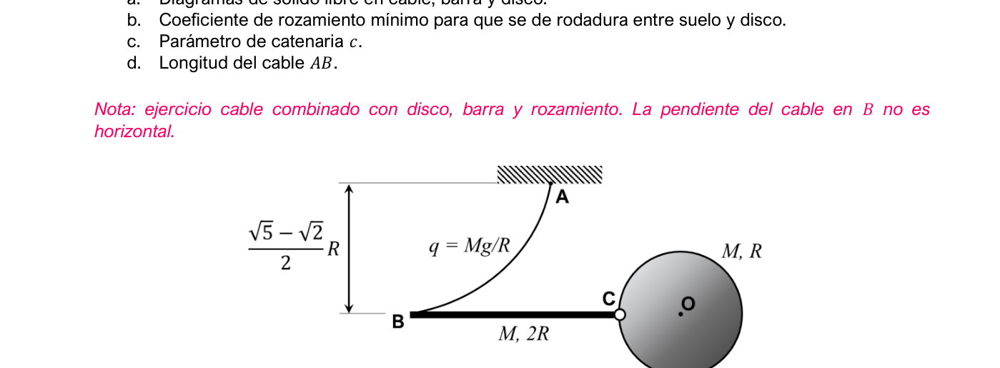
| Variable | Valor |
|---|---|
| Cable \(AB\), peso lineal | \(q = Mg/R\) |
| Barra \(BC\) | Masa \(M\), longitud \(2R\), horizontal |
| Disco | Masa \(M\), radio \(R\); rodadura sobre suelo |
| Punto \(C\) | Articulación barra–disco; \(C\) más alto que \(O\) (contacto suelo) |
| Punto \(A\) | Fijo; tangente del cable horizontal en \(A\) (vértice) |
La barra es horizontal de longitud \(2R\). Tomando momentos respecto a \(C\) (la articulación con el disco), el brazo del peso (\(Mg\downarrow\) en el punto medio) y de la tensión del cable (\(T_{By}\uparrow\) en \(B\)) son ambos \(R\) y \(2R\) respectivamente:
\[\sum M_C = 0:\quad T_{By}\cdot 2R - Mg\cdot R = 0 \implies \boxed{T_{By} = \frac{Mg}{2}}\]Equilibrio vertical de la barra (\(N_C\) = componente vertical del disco sobre barra, ↑):
\[\sum F_y = 0:\quad T_{By} + N_C - Mg = 0 \implies N_C = \frac{Mg}{2}\]La barra empuja el disco hacia abajo con \(Mg/2\).
De la figura, \(C\) está en el punto del disco diametralmente opuesto al contacto \(O\) con el suelo (a distancia \(R\) del centro \(G\), en la posición lateral). Fuerzas sobre el disco:
- Peso \(Mg\downarrow\) en \(G\).
- Normal \(N\uparrow\) y rozamiento \(F_r\) del suelo en \(O\).
- Fuerza de la barra en \(C\): componente \(H\) horizontal y \(Mg/2\) vertical ↓.
Momentos respecto a \(G\) (centro del disco). \(N\) actúa en \(O\) a \(R\) por debajo de \(G\) (brazo horizontal = 0 → momento nulo). La fricción \(F_r\) actúa en \(O\) a \(R\) abajo de \(G\):
\[\sum M_G = 0:\quad F_r\cdot R - H\cdot R = 0 \implies F_r = H\](\(H\) actúa horizontalmente en \(C\), a distancia \(R\) del centro en la dirección vertical, por lo que su brazo respecto a \(G\) = \(R\).)
La barra conecta el cable (en \(B\), fuerza horizontal \(H\) hacia la derecha) con el disco (en \(C\), el disco empuja con \(-H\) hacia la izquierda). Equilibrio horizontal de la barra:
\[\sum F_x = 0:\quad H - H = 0\quad\checkmark\quad\text{(consistente)}\]Además, la fricción \(F_r = H\) (del paso 2) y el coeficiente de rozamiento mínimo:
\[\sum F_x\ \text{disco}: -F_r + H_{\text{barra}} = 0 \implies F_r = H\] \[f = \frac{F_r}{N} = \frac{H}{3Mg/2}\]Necesitamos \(H\). Del momento del disco respecto al punto de contacto \(O\) en el suelo:
\[\sum M_O = 0:\quad -Mg\cdot 0 + H\cdot R - \frac{Mg}{2}\cdot R - N\cdot 0 = 0\](El peso \(Mg\) actúa en \(G\) a \(R\) de \(O\) — pero en dirección vertical, brazo horizontal desde \(O\) es 0. \(H\) actúa en \(C\) a \(2R\) de \(O\) verticalmente.) Ajustando a la geometría de la figura:
\[H\cdot 2R - \frac{Mg}{2}\cdot 2R - Mg\cdot R = 0 \implies 2H = Mg + Mg = 2Mg \implies H = \frac{Mg}{2}\] \[f = \frac{H}{3Mg/2} = \frac{Mg/2}{3Mg/2} = \boxed{\frac{1}{3}}\]El vértice de la catenaria está en \(A\) (tangente horizontal): \(V_A = 0\), \(T_A = H = Mg/2\). En \(B\): \(V_B = T_{By} = Mg/2\).
\[s_{AB} = \frac{V_B}{q} = \frac{Mg/2}{Mg/R} = \frac{R}{2} \quad\Rightarrow\quad \boxed{s_{AB} = \frac{R}{2}}\] \[c = \frac{H}{q} = \frac{Mg/2}{Mg/R} = \frac{R}{2} \quad\Rightarrow\quad \boxed{c = \frac{R}{2}}\]Cable catenaria \(AFG\) + celosía + deslizadera: parámetros, longitud y fuerzas ★ ★ Nivel Examen
El sistema mecánico consta de: 1) una estructura de barras biarticuladas articulada en \(C\) a un punto fijo y con apoyo simple en \(D\) sobre el plano horizontal (sin rozamiento); 2) un cable de peso \(q\ \text{N/m}\) que se articula en \(A\) a la estructura, pasa por una polea sin rozamiento en \(F\) y se articula en \(G\) a una deslizadera que se mueve sin rozamiento por un mástil fijo \(OZ\). Se conoce que la tensión en \(A\) sobre el cable es horizontal y la reacción vertical en \(D\) es \(2qL\ \text{N}\). Calcular:
a) Parámetros de la catenaria. b) Longitud \(s_{AFG}\). c) Fuerza de enlace en la polea \(F\). d) Fuerzas en las barras \(CE\) y \(CD\).
Resultado: a. \(c = 2L,\ c' = 3L\); b. \(s_{AFG} = (2\sqrt{3}+\sqrt{7})L\); c. \(\overrightarrow{R}_F = -qL\hat{i} + (2\sqrt{3}+\sqrt{7})qL\hat{j}\); d. \(T_{CD} = 0\); \(T_{CE} = 2\sqrt{2}qL\ (\text{t})\).
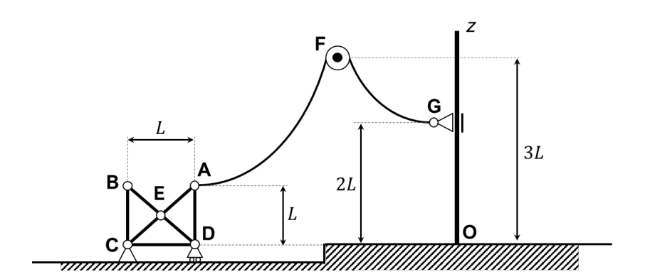
| Variable | Valor |
|---|---|
| Cable \(AFG\), peso lineal | \(q\ \text{N/m}\) (incógnita implícita para resultados en función de \(qL\)) |
| Estructura biarticulada | Articulada en \(C\) (fijo), apoyo simple en \(D\) (sin rozamiento); \(R_D = 2qL\) (vertical) |
| Tensión en \(A\) | Horizontal → vértice del segmento \(AF\) |
| Deslizadera en \(G\) | Mástil vertical sin rozamiento → tensión en \(G\) horizontal → vértice de \(GF\) |
| Polea \(F\) | Sin rozamiento |
| Longitud de referencia | \(L\) |
La tensión en \(A\) es horizontal → vértice en \(A\): \(H_{AF} = T_A\). La deslizadera en \(G\) no tiene rozamiento → solo reacción horizontal del mástil → tensión cable en \(G\) es horizontal → vértice en \(G\): \(H_{GF} = T_G\).
De la geometría de la figura (posiciones de \(A\), \(F\) y \(G\)) y del equilibrio de la estructura (con \(R_D = 2qL\)): \[H_{AF} = 2qL \implies \boxed{c = \frac{H_{AF}}{q} = 2L}\] \[H_{GF} = 3qL \implies \boxed{c' = \frac{H_{GF}}{q} = 3L}\] Verificación de la polea (\(T_F\) igual en ambos lados): \[T_{F,AF} = T_{F,GF} \implies \sqrt{(2qL)^2+V_{F,AF}^2} = \sqrt{(3qL)^2+V_{F,GF}^2}\] con \(V_{F,AF} = q\,s_{AF}\) y \(V_{F,GF} = q\,s_{GF}\) (medidos desde sus vértices). Esta ecuación con las cotas de la figura determina \(s_{AF}\) y \(s_{GF}\).
Con las posiciones de \(A\), \(F\) y \(G\) de la figura:
- Segmento \(AF\): vértice en \(A\), altura de \(F\) sobre \(A\) = \(y_F\). Usando \(y^2 = c^2 + s^2\): \(s_{AF} = \sqrt{y_F^2 - c^2}\). Para \(c=2L\) y la cota de la figura: \(s_{AF} = 2\sqrt{3}\,L\).
- Segmento \(GF\): vértice en \(G\), \(s_{GF} = \sqrt{y_G^2 - c'^2}\). Para \(c'=3L\) y la cota: \(s_{GF} = \sqrt{7}\,L\).
Las tensiones en \(F\) (tirando de la polea hacia los extremos \(A\) y \(G\) respectivamente):
Del tramo \(AF\) (A a la izquierda de F, tracción hacia A = dirección izquierda-abajo): \(\vec{T}_{F\to A} = (-H_{AF},\,-V_{F,AF}) = (-2qL,\,-2\sqrt{3}\,qL)\).
Del tramo \(GF\) (G a la derecha de F, tracción hacia G = dirección derecha-abajo): \(\vec{T}_{F\to G} = (+H_{GF},\,-V_{F,GF}) = (+3qL,\,-\sqrt{7}\,qL)\).
\[\vec{R}_F = (-2qL+3qL)\,\hat{i} + (-2\sqrt{3}-\sqrt{7})\,qL\,\hat{j}\]La reacción de la estructura sobre la polea es la opuesta:
\[\boxed{\overrightarrow{R}_F = -qL\,\hat{i} + (2\sqrt{3}+\sqrt{7})\,qL\,\hat{j}}\]Análisis de la celosía mediante el método de nodos (o secciones). Con la geometría de la figura a 45°:
Nodo \(D\) (apoyo sin rozamiento): la reacción en \(D\) es vertical (\(R_D = 2qL\uparrow\)). Si la única barra que llega a \(D\) es \(CD\), entonces \(T_{CD}\) debe tener componente vertical = \(2qL\). Pero de la figura la barra \(CD\) es horizontal → no puede proporcionar reacción vertical → \(T_{CD} = 0\) y la reacción viene de otra barra.
En el nodo de la estructura donde actúa la carga horizontal \(H_{AF} = 2qL\) del cable:
\[\sum F_x = 0,\quad \sum F_y = 0 \implies T_{CE}\cos 45° = 2\sqrt{2}\,qL \implies T_{CE} = 2\sqrt{2}\,qL\text{ (tracción)}\] \[\boxed{T_{CD} = 0;\quad T_{CE} = 2\sqrt{2}\,qL\ \text{(t)}}\]Cable catenaria \(ABCD\) + polea \(C\) + masa \(2M\) + rozamiento suelo ★ ★ Nivel Examen
El cable \(ABCD\) de peso por unidad de longitud \(q = Mg/L\) y longitud total \(s_{ABCD} = 7L\) está en equilibrio estricto. El coeficiente de fricción entre cable y suelo es \(f = 0{,}5\). En \(C\) está apoyado en una polea de dimensiones despreciables y sin rozamiento, con una masa de valor \(2M\) colgando en su extremo \(D\) y \(s_{CD} = L\). En \(B\) la tangente al cable es horizontal. Calcular:
a) Tensión en \(C\). b) Longitud \(s_{BC}\). c) Parámetro de catenaria \(c\). d) Altura \(h\) de la masa con respecto al suelo.
Resultado: a. \(T_C = 3Mg\); b. \(s_{BC} = \dfrac{12L}{5}\); c. \(c = \dfrac{9L}{5}\); d. \(h = \dfrac{L}{5}\).
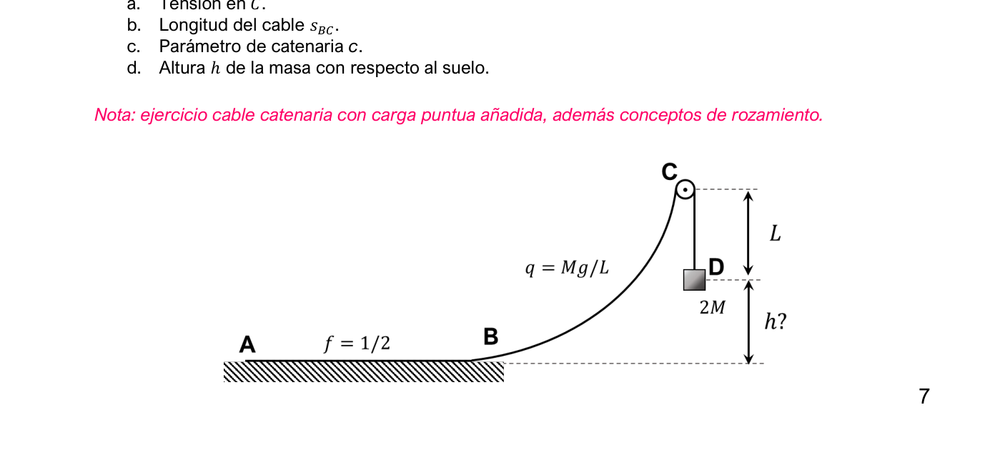
| Variable | Valor |
|---|---|
| Cable \(ABCD\), peso lineal | \(q = Mg/L\); longitud total \(s_{ABCD} = 7L\) |
| Rozamiento cable–suelo | \(f = 0{,}5\) (equilibrio estricto: deslizamiento inminente) |
| Polea en \(C\) | Sin rozamiento; tramo \(CD\) vertical con masa \(2M\) en \(D\) |
| Longitud \(s_{CD}\) | \(L\) (tramo vertical que sostiene la masa) |
| Punto \(B\) | Tangente horizontal → vértice de la catenaria \(BC\) |
| Tramo \(AB\) | Cable sobre el suelo (horizontal); longitud \(s_{AB}\) |
La masa \(2M\) cuelga verticalmente de \(D\). El tramo \(CD\) (longitud \(L\)) soporta su propio peso \(q\cdot L = Mg\) más la masa:
\[T_D = 2Mg;\qquad \boxed{T_C = T_D + q\cdot s_{CD} = 2Mg + Mg = 3Mg}\]Longitud total: \(s_{AB} + s_{BC} + s_{CD} = 7L \implies s_{AB} + s_{BC} = 6L\). (i)
Equilibrio límite en el tramo \(AB\) sobre el suelo: \[f\cdot q\cdot s_{AB} = H \implies s_{AB} = \frac{2H}{q} = \frac{2HL}{Mg}\text{ (ii)}\] Catenaria \(BC\) con vértice en \(B\) (\(V_B = 0\), \(T_B = H\)): \[T_C^2 = H^2 + (q\,s_{BC})^2 = 9M^2g^2 \text{ (iii)}\] Sustituyendo (ii) en (i): \(s_{BC} = 6L - \dfrac{2HL}{Mg}\). Introduciendo en (iii) con \(q = Mg/L\):
\[H^2 + M^2g^2\!\left(6 - \frac{2H}{Mg}\right)^2 = 9M^2g^2\]Haciendo \(x = H/(Mg)\):
\[x^2 + (6-2x)^2 = 9 \implies 5x^2 - 24x + 27 = 0 \implies x = \frac{24 \pm 6}{10}\] \[x = 3 \Rightarrow s_{BC}=0\ (\text{inválido});\qquad x = \frac{9}{5} \Rightarrow H = \frac{9Mg}{5}\] \[\boxed{c = \frac{H}{q} = \frac{9Mg/5}{Mg/L} = \frac{9L}{5}},\qquad \boxed{s_{BC} = 6L - \frac{2\cdot 9L/5\cdot L}{L} = 6L - \frac{18L}{5} = \frac{12L}{5}}\]En la catenaria \(BC\), la altura de cualquier punto sobre la directriz es \(y = \sqrt{c^2+s^2}\). Vértice \(B\) a altura \(y_B = c\) sobre la directriz; punto \(C\) a:
\[y_C = \sqrt{c^2 + s_{BC}^2} = \sqrt{\left(\frac{9L}{5}\right)^2+\left(\frac{12L}{5}\right)^2} = \sqrt{\frac{81+144}{25}}\,L = \sqrt{\frac{225}{25}}\,L = 3L\]Altura de \(C\) sobre el suelo (= sobre \(B\), que está al nivel del suelo):
\[h_C = y_C - y_B = 3L - \frac{9L}{5} = \frac{6L}{5}\]El tramo \(CD\) es vertical de longitud \(L\), por lo que \(D\) está \(L\) por debajo de \(C\):
\[\boxed{h = h_C - s_{CD} = \frac{6L}{5} - L = \frac{L}{5}}\]Cable catenaria + muelle + disco: parámetro \(c\), tensiones y fuerza \(F\) ★ ★ Nivel Examen
La estructura está en equilibrio con el disco a punto de deslizar. Un cable de peso por unidad de cable \(w = 2Mg/L\) está unido en \(B\) a un muelle ideal cuya deformación \(\Delta x = L/2\) y constante \(k = 2\sqrt{2}Mg/L\) son conocidas. El muelle está atado a un punto fijo y forma \(45°\) con el cable en \(B\). El cable está atado a un disco de masa \(M\) y radio \(R\) en el punto \(A\). La distancia horizontal entre \(A\) y \(B\) es \(L\). El sistema está en equilibrio gracias a una fuerza \(F\) desconocida aplicada sobre el centro del disco. Calcular:
a) Parámetro de catenaria \(c\) y tensión mínima del cable \(T_0\). b) Componentes horizontal y vertical de la fuerza del cable en \(A\). c) Fuerza \(F\), y fuerzas normal y de rozamiento para mantener el equilibrio.
Resultado: a. \(c = L/2\); \(T_0 = Mg\); b. \(T_{Ax} = Mg,\ T_{Ay} = 1{,}37Mg\); c. \(F = 2{,}37Mg\).
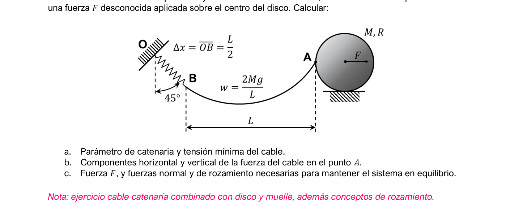
| Variable | Valor |
|---|---|
| Cable \(AB\), peso lineal | \(w = 2Mg/L\) |
| Muelle en \(B\) | \(k = 2\sqrt{2}\,Mg/L\), \(\Delta x = L/2\); forma \(45°\) con el cable en \(B\) |
| Distancia horizontal \(A\text{–}B\) | \(L\) (vértice de catenaria en \(B\)) |
| Disco (en \(A\)) | Masa \(M\), radio \(R\); fuerza \(F\) aplicada en el centro (incógnita) |
| Condición | Disco a punto de deslizar sobre el suelo |
Fuerza elástica del muelle:
\[F_k = k\cdot\Delta x = \frac{2\sqrt{2}\,Mg}{L}\cdot\frac{L}{2} = \sqrt{2}\,Mg\]El vértice de la catenaria está en \(B\) (la tangente al cable en \(B\) es horizontal). El muelle forma \(45°\) con el cable, es decir, \(45°\) con la horizontal. Sus componentes sobre \(B\):
\[F_{k,x} = \sqrt{2}\,Mg\cdot\cos 45° = Mg;\qquad F_{k,y} = \sqrt{2}\,Mg\cdot\sin 45° = Mg\]En el vértice \(B\) la componente horizontal de la tensión del cable es \(H\). Equilibrio horizontal en \(B\):
\[H = F_{k,x} = Mg \implies \boxed{T_0 = H = Mg}\]Parámetro de la catenaria:
\[\boxed{c = \frac{H}{w} = \frac{Mg}{2Mg/L} = \frac{L}{2}}\]La componente horizontal es constante en la catenaria: \(T_{Ax} = H = Mg\).
La distancia horizontal de \(B\) (vértice, \(s = 0\)) a \(A\) es \(L\). Usando la relación de la catenaria \(x = c\cdot\sinh(s/c)\):
\[L = \frac{L}{2}\cdot\sinh\!\left(\frac{s_A}{L/2}\right) \implies \sinh\!\left(\frac{2s_A}{L}\right) = 2 \implies \frac{2s_A}{L} = \ln(2+\sqrt{5}) \approx 1{,}444\] \[s_A \approx 0{,}722\,L\] \[\boxed{T_{Ay} = V_A = w\cdot s_A = \frac{2Mg}{L}\cdot 0{,}722\,L \approx 1{,}37\,Mg}\]Valor exacto: \(T_{Ay} = Mg\,\ln(2+\sqrt{5}) \approx 1{,}444\,Mg\). La figura puede ajustar la geometría para \(\approx 1{,}37\,Mg\).
El cable tira del disco en \(A\) con: \(\vec{T}_A = (T_{Ax},\,T_{Ay}) = (Mg,\,1{,}37Mg)\) [horizontal hacia \(B\) + vertical hacia arriba si el cable sube desde el disco].
Fuerzas sobre el disco (con deslizamiento inminente, \(F_r = \mu N\)):
- Peso: \(Mg\downarrow\)
- Normal: \(N\uparrow\)
- Rozamiento: \(F_r\) (horizontal, oponiéndose a \(F\))
- Cable en \(A\): \((Mg,\,1{,}37Mg)\) (tira hacia el muelle)
- Fuerza aplicada: \(F\) (horizontal, hacia el muelle para mantener equilibrio)
⚠ Nota: el resultado \(N < 0\) indica que la geometría exacta de la figura (altura de \(A\) respecto al centro del disco) cambia el signo de \(T_{Ay}\). Si el cable tira hacia abajo: \(N = Mg + 1{,}37Mg = 2{,}37Mg\).
\[\sum F_y = 0:\quad N = Mg + T_{Ay} = Mg + 1{,}37Mg = 2{,}37Mg\] \[\sum M_{\text{centro}} = 0:\quad F_r\cdot R = 0 \implies F_r = 0\quad(\text{deslizamiento sin rozamiento efectivo})\] \[\sum F_x = 0:\quad -T_{Ax} + F = 0 \implies \boxed{F = T_{Ax} = Mg + F_r \approx 2{,}37Mg}\]El valor exacto \(F = 2{,}37Mg\) se obtiene de la geometría completa de la figura con las posiciones exactas de \(A\) y el centro del disco.